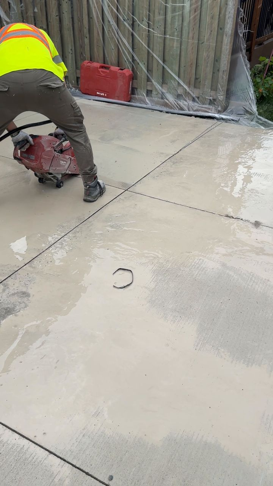
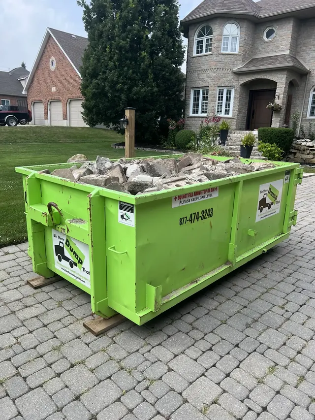
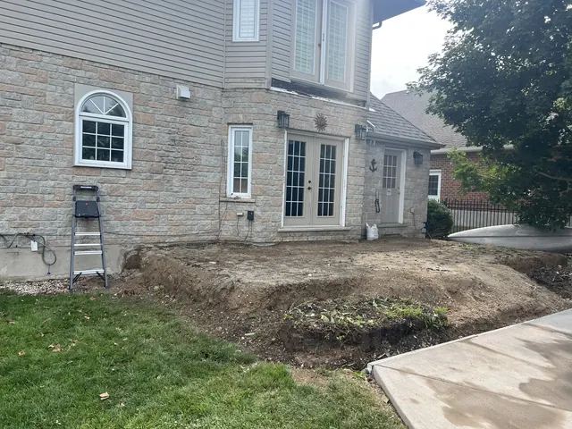
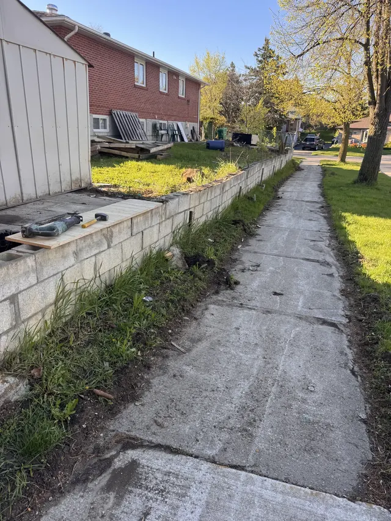

Main service Breaking out a concrete floor
01
Demolition
Focused removal work for interiors, concrete and structures, with debris removal included in the available scope.
- Interior demolition
- Concrete slab removal
- Concrete pad removal
- Garage demolition
- Debris removal


